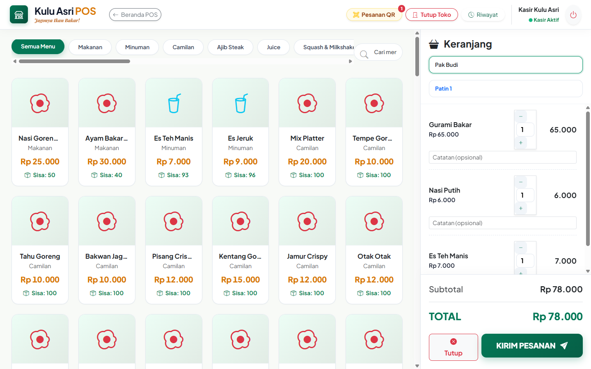
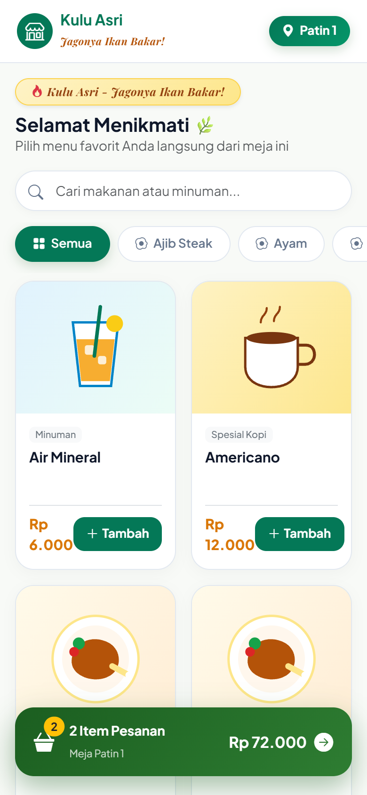
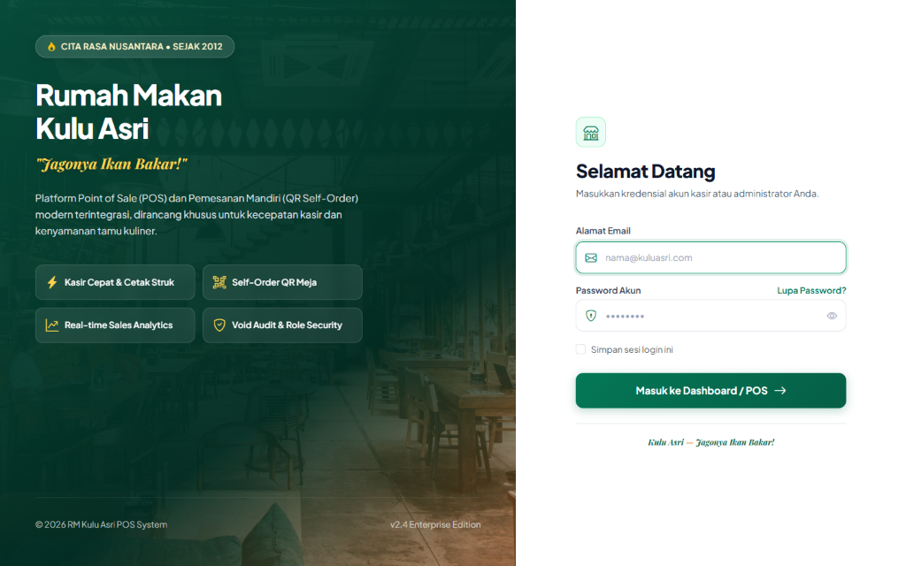
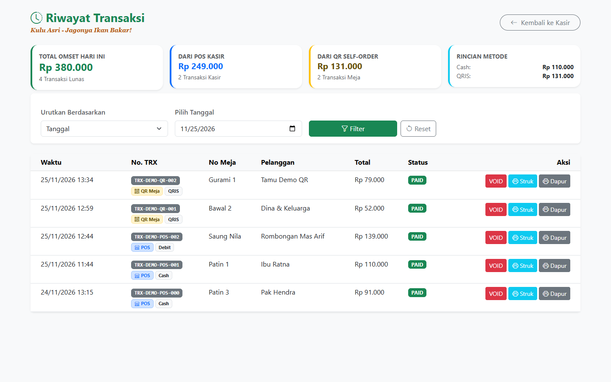
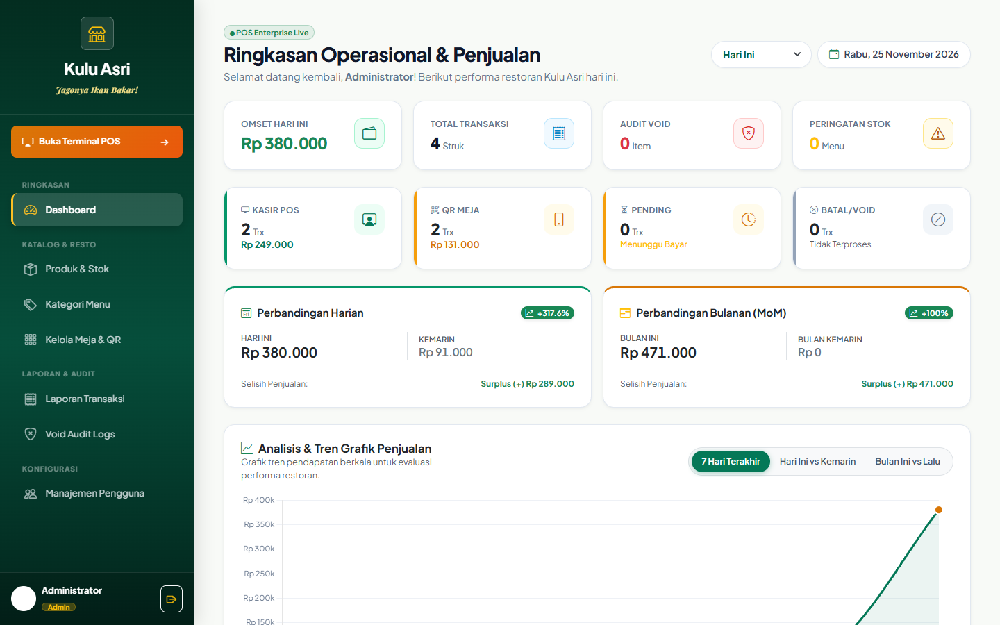
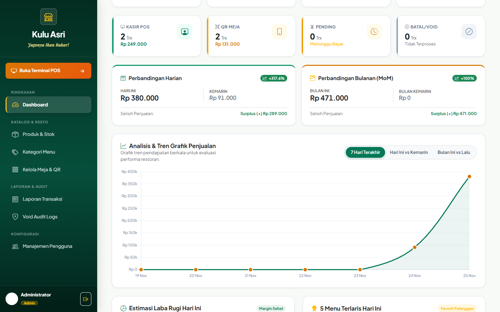
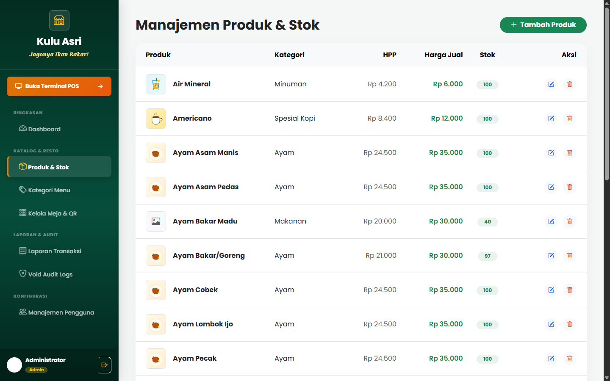
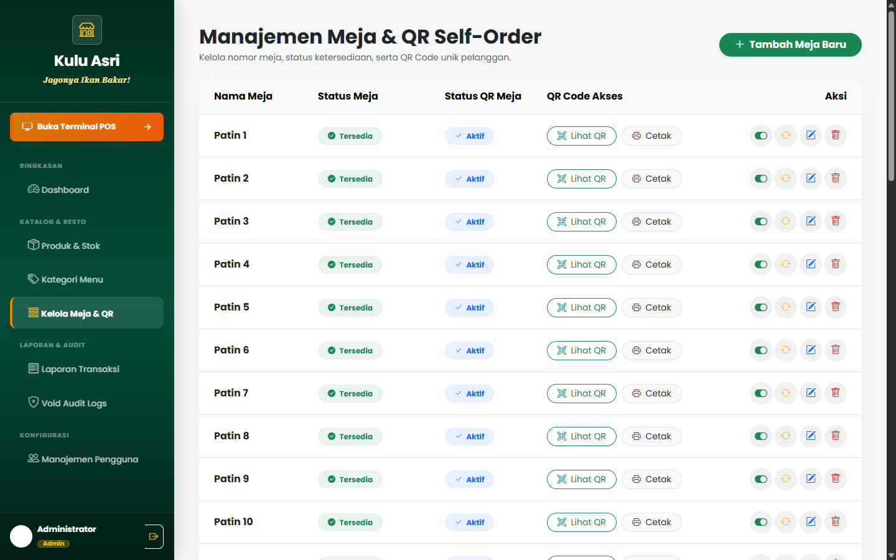
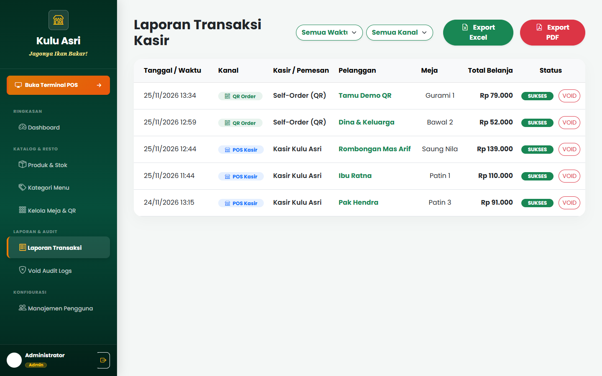

"Jagonya Ikan Bakar!" — Resto Management & QR Self-Order
Platform manajemen restoran terintegrasi yang menggabungkan Terminal Kasir POS berkecepatan tinggi, pemesanan mandiri pelanggan via QR Meja, serta analitik laba rugi & audit anti-fraud secara real-time.


Dirancang untuk memangkas antrean jam sibuk, menghilangkan selisih kasir, dan memberi visibilitas finansial instan kepada pemilik usaha.
Pencatatan manual memperlambat servis saat jam makan siang, rawan selisih stok/kas, dan sulit memantau margin bersih harian.
Pesanan kasir langsung dan pesanan QR pelanggan masuk ke satu antrean dapur & buku besar yang tersinkronisasi otomatis.
Pelayanan counter, hold bill meja, checkout Cash/QRIS & cetak struk 58/80mm.
Scan QR unik per meja, pilih menu dari browser HP tanpa instal aplikasi.
Sinkronisasi Status Dapur • Pengurangan Stok Atomik • Webhook Pembayaran • Void Audit Log
Komparasi omset DoD & MoM, estimasi Laba Bersih (Omset - HPP), Top 5 Menu, Export Excel & PDF.
Gerbang masuk tunggal yang memisahkan hak akses operasional kasir dan analitik manajemen secara ketat.
Akun Administrator diarahkan ke Executive Dashboard, sementara akun Kasir langsung masuk ke Terminal POS siap pakai.
Menggunakan palet Botanical Emerald & Honey Amber dengan tipografi Plus Jakarta Sans & Playfair Display.
Setiap endpoint Admin, Kasir, hingga token QR Meja dilindungi middleware otorisasi dan rate limiter.

Antarmuka layar sentuh yang dirancang untuk kecepatan input pesanan dan minim kesalahan saat jam sibuk.
Navigasi puluhan menu ikan bakar, ayam, hingga minuman dengan pill kategori responsif dan live search.
Simpan pesanan terbuka per meja (mis. Patin 1), catat request bumbu dapur, lalu proses bayar kapan saja.
Pesanan self-order pelanggan muncul langsung di panel kasir untuk konfirmasi pembayaran & antrean dapur.
Pelanggan cukup memindai kode QR di meja untuk melihat menu visual, memesan langsung, dan melacak status hidangan.
URL bertoken unik per meja otomatis mengenali nomor meja pelanggan (contoh: Meja Patin 1) dengan validasi keamanan.
Tampilan responsif 390px dengan bilah keranjang melayang yang menampilkan ringkasan item dan total harga real-time.
Mendukung bayar di kasir atau pembayaran digital/webhook dengan halaman status antrean pesanan langsung.

Rekap harian kasir yang memisahkan pendapatan per kanal dan menjaga akuntabilitas setiap transaksi.
Menampilkan kontribusi omset dari POS Kasir vs QR Self-Order beserta rincian metode pembayaran (Cash/QRIS).
Cetak ulang struk pelanggan maupun tiket pesanan dapur kapan pun dibutuhkan langsung dari tabel riwayat.
Pembatalan transaksi mewajibkan alasan dan dicatat ke log audit, dilengkapi laporan tutup kasir End-of-Day.
Pemantauan KPI bisnis, perbandingan pertumbuhan DoD/MoM, tren grafik Chart.js, hingga estimasi margin bersih.


Kelola ratusan item menu beserta harga modalnya, sekaligus kendali penuh aktivasi dan regenerasi token QR tiap meja.


Mempermudah pembukuan harian dan bulanan manajemen dengan filter riwayat lengkap dan ekspor siap cetak.
Telusuri transaksi berdasarkan rentang waktu, kasir/pemesan, nama meja, hingga status pembayaran.
Unduh rekapitulasi penjualan ke format spreadsheet atau dokumen PDF resmi untuk arsip keuangan.
Menjamin seluruh transaksi batal tercatat transparan dan terpisah dari perhitungan omset sah.

Mengutamakan keandalan transaksi, keamanan akses, serta pengalaman pengguna lintas perangkat (desktop, tablet & mobile).
Pemisahan controller Admin, POS, Customer QR, serta webhook pembayaran dengan Eloquent ORM dan migrasi terstruktur.
Role middleware (admin / kasir), proteksi rate-limit pada checkout QR publik, serta pencatatan Void Audit & StockLog.
Token warna, tipografi, dan radius terpusat (design-tokens.css) yang menjaga konsistensi UI Admin, Kasir & QR Menu.
Grafik komparasi tren penjualan dinamis (7 hari / bulanan) tanpa reload halaman penuh.
Template struk kasir, tiket dapur, cetak QR meja, dan laporan EOD siap cetak di printer thermal 58mm/80mm.
Pengalaman self-order tanpa instalasi aplikasi untuk pelanggan restoran, terhubung real-time ke kasir.
Seluruh source code, seeder menu demo, dokumentasi brand, dan panduan instalasi tersedia di GitHub.